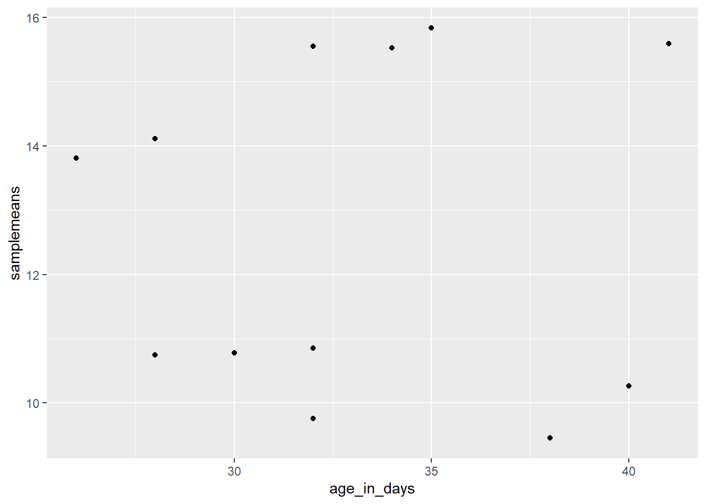
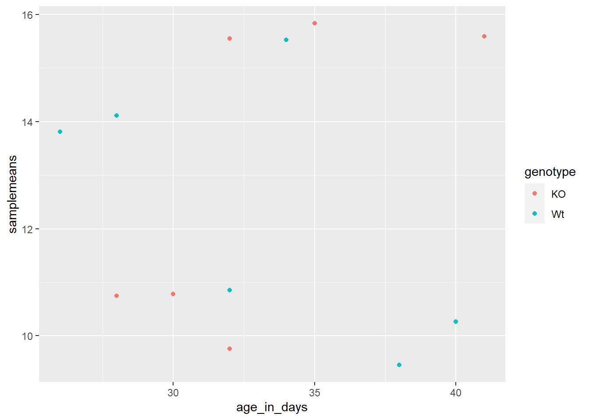
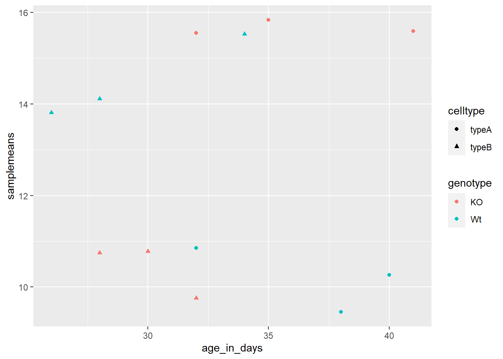
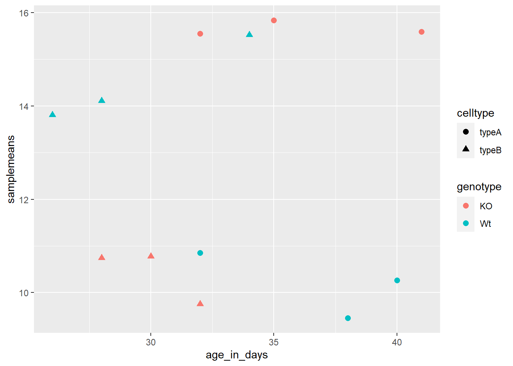
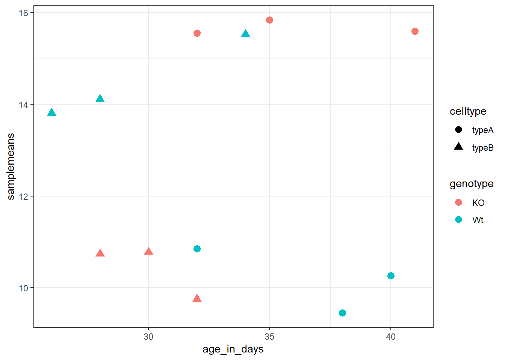
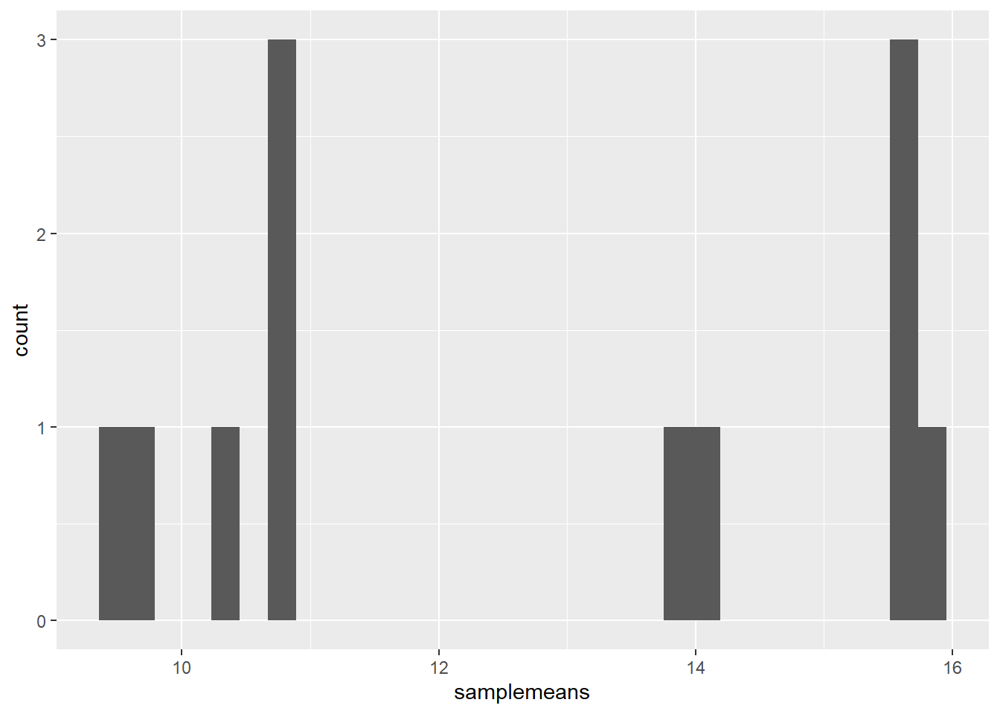
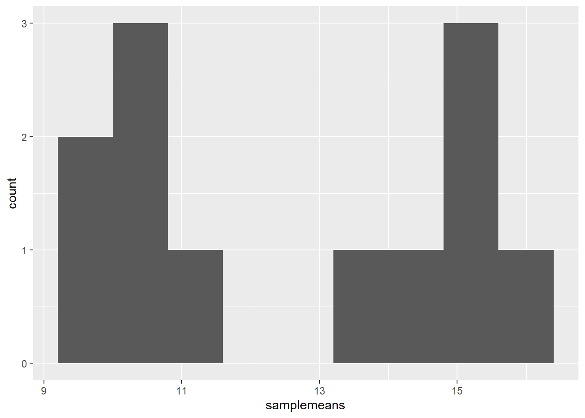
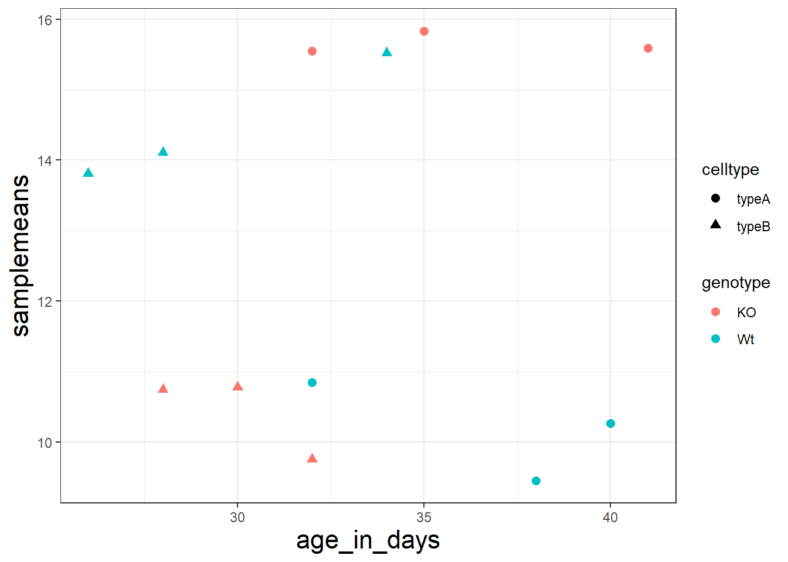
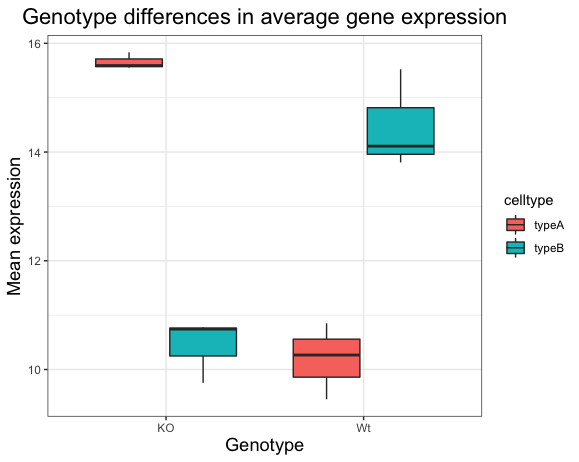

## load the new_metadata data frame into your environment from a .RData object
load("../data/new_metadata.RData")22 Data Visualization in R
22.1 Data Visualization with ggplot2
For this lesson, you will need the new_metadata data frame. Load it into your environment as follows:
Next, let’s check if it was successfully loaded into the environment:
# this data frame should have 12 rows and 5 columns
View(new_metadata)When we are working with large sets of numbers it can be useful to display that information graphically to gain more insight. In this lesson we will be plotting with the popular Bioconductor package ggplot2.
The ggplot2 syntax takes some getting used to, but once you get it, you will find it’s extremely powerful and flexible. We will start with drawing a simple x-y scatterplot of samplemeans versus age_in_days from the new_metadata data frame. Please note that ggplot2 expects a dataframe or a tibble (the Tidyverse version of a dataframe) as input.
Let’s start by loading the ggplot2 library:
library(ggplot2)The ggplot() function is used to initialize the basic graph structure, then we add to it. The basic idea is that you specify different parts of the plot using additional functions one after the other and combine them into a “code chunk” using the + operator; the functions in the resulting code chunk are called layers.
Let’s start:
load("../data/new_metadata.RData")
ggplot(new_metadata) # what happens? 
You get an blank plot, because you need to specify additional layers using the + operator.
The geom (geometric) object is the layer that specifies what kind of plot we want to draw. A plot must have at least one geom; there is no upper limit. Examples include:
- points (
geom_point,geom_jitterfor scatter plots, dot plots, etc) - lines (
geom_line, for time series, trend lines, etc) - boxplot (
geom_boxplot, for, well, boxplots!)
Let’s add a “geom” layer to our plot using the + operator, and since we want a scatter plot so we will use geom_point().
ggplot(new_metadata) +
geom_point() # note what happens hereWhy do we get an error? Is the error message easy to decipher?
We get an error because each type of geom usually has a required set of aesthetics to be set. “Aesthetics” are set with the aes() function and can be set either nested within geom_point() (applies only to that layer) or within ggplot() (applies to the whole plot).
The aes() function has many different arguments, and all of those arguments take columns from the original data frame as input. It can be used to specify many plot elements including the following:
- position (i.e., on the x and y axes)
- color (“outside” color)
- fill (“inside” color)
- shape (of points)
- linetype
- size
To start, we will specify x- and y-axis since geom_point requires the most basic information about a scatterplot, i.e. what you want to plot on the x and y axes. All of the other plot elements mentioned above are optional.
ggplot(new_metadata) +
geom_point(aes(x = age_in_days, y= samplemeans))
Now that we have the required aesthetics, let’s add some extras like color to the plot. We can color the points on the plot based on the genotype column within aes(). You will notice that there are a default set of colors that will be used so we do not have to specify. Note that the legend has been conveniently plotted for us.
ggplot(new_metadata) +
geom_point(aes(x = age_in_days, y= samplemeans, color = genotype)) 
Let’s try to have both celltype and genotype represented on the plot. To do this we can assign the shape argument in aes() the celltype column, so that each celltype is plotted with a different shaped data point.
ggplot(new_metadata) +
geom_point(aes(x = age_in_days, y= samplemeans, color = genotype,
shape=celltype)) 
The data points are quite small. We can adjust the size of the data points within the geom_point() layer, but it should not be within aes() since we are not mapping it to a column in the input data frame, instead we are just specifying a number.
ggplot(new_metadata) +
geom_point(aes(x = age_in_days, y= samplemeans, color = genotype,
shape=celltype), size=2.25) 
The labels on the x- and y-axis are also quite small and hard to read. To change their size, we need to add an additional theme layer. The ggplot2 theme system handles non-data plot elements such as:
- Axis label aesthetics
- Plot background
- Facet label backround
- Legend appearance
There are built-in themes we can use (i.e. theme_bw()) that mostly change the background/foreground colours, by adding it as additional layer. Or we can adjust specific elements of the current default theme by adding the theme() layer and passing in arguments for the things we wish to change. Or we can use both.
Let’s add a layer theme_bw().
ggplot(new_metadata) +
geom_point(aes(x = age_in_days, y= samplemeans, color = genotype,
shape=celltype), size=3.0) +
theme_bw() 
Do the axis labels or the tick labels get any larger by changing themes?
No, they don’t. But, we can add arguments using theme() to change the size of axis labels ourselves. Since we will be adding this layer “on top”, or after theme_bw(), any features we change will override what is set by the theme_bw() layer.
Let’s increase the size of both the axes titles to be 1.5 times the default size. When modifying the size of text the rel() function is commonly used to specify a change relative to the default.
ggplot(new_metadata) +
geom_point(aes(x = age_in_days, y= samplemeans, color = genotype,
shape=celltype), size=2.25) +
theme_bw() +
theme(axis.title = element_text(size=rel(1.5))) 
We can also make a boxplot of the data:
22.2 Histogram
To plot a histogram we require another type of geometric object called geom_histogram, which requires a statistical transformation. Some plot types (such as scatterplots) do not require transformations, each point is plotted at x and y coordinates equal to the original value. Other plots, such as boxplots, histograms, prediction lines etc. need to be transformed. Usually these objects have has a default statistic for the transformation, but that can be changed via the stat_bin argument.
Let’s plot a histogram of sample mean expression in our data:
ggplot(new_metadata) +
geom_histogram(aes(x = samplemeans))`stat_bin()` using `bins = 30`. Pick better value with `binwidth`.
You will notice that even though the histogram is plotted, R gives a warning message `stat_bin() using bins = 30. Pick better value with binwidth.` These are the transformations we discussed. Apparently the default is not good enough.
Let’s change the binwidth values. How does the plot differ?
ggplot(new_metadata) +
geom_histogram(aes(x = samplemeans), stat = "bin", binwidth=0.8)
NOTE: You can use the
example("geom_point")function here to explore a multitude of different aesthetics and layers that can be added to your plot. As you scroll through the different plots, take note of how the code is modified. You can use this with any of the different geometric object layers available in ggplot2 to learn how you can easily modify your plots!
NOTE: RStudio provide this very useful cheatsheet for plotting using
ggplot2. Different example plots are provided and the associated code (i.e whichgeomorthemeto use in the appropriate situation.) We also encourage you to persuse through this useful online reference for working with ggplot2.
Exercise 1: Themeing
Let’s return to our scatterplot:
ggplot(new_metadata) +
geom_point(aes(x = age_in_days, y= samplemeans, color = genotype,
shape=celltype), size=2.25) +
theme_bw() +
theme(axis.title = element_text(size=rel(1.5))) 
Exercise 2: Boxplots
A boxplot provides a graphical view of the distribution of data based on a five number summary: * The top and bottom of the box represent the (1) first and (2) third quartiles (25th and 75th percentiles, respectively). * The line inside the box represents the (3) median (50th percentile). * The whiskers extending above and below the box represent the (4) maximum, and (5) minimum of a data set. * The whiskers of the plot reach the minimum and maximum values that are not outliers.
In this case, outliers are determined using the interquartile range (IQR), which is defined as: Q3 - Q1. Any values that exceeds 1.5 x IQR below Q1 or above Q3 are considered outliers and are represented as points above or below the whiskers.
- Boxplot
Generate a boxplot using the data in the new_metadata dataframe. Create a ggplot2 code chunk with the following instructions:
- Use the
geom_boxplot()layer to plot the differences in sample means between the Wt and KO genotypes. - Use the
fillaesthetic to look at differences in sample means between the celltypes within each genotype. - Add a title to your plot.
- Add labels, ‘Genotype’ for the x-axis and ‘Mean expression’ for the y-axis.
- Make the following
theme()changes:- Use the
theme_bw()function to make the background white. - Change the size of your axes labels to 1.25x larger than the default.
- Change the size of your plot title to 1.5x larger than default.
- Center the plot title.
- Use the
After running the above code the boxplot should look something like that provided below.

- Changing the order of genotype on the Boxplot
Let’s say you wanted to have the “Wt” boxplots displayed first on the left side, and “KO” on the right. How might you go about doing this?
To do this, your first question should be - How does ggplot2 determine what to place where on the X-axis? * The order of the genotype on the X axis is in alphabetical order. * To change it, you need to make sure that the genotype column is a factor * And, the factor levels for that column are in the order you want on the X-axis
Factor the
new_metadata$genotypecolumn without creating any extra variables/objects and change the levels toc("Wt", "KO")Re-run the boxplot code chunk you created for the “Boxplot!” exercise above.
Changing default colors
You can color the boxplot differently by using some specific layers:
- Add a new layer
scale_color_manual(values=c("purple","orange")).- Do you observe a change?
- Replace
scale_color_manual(values=c("purple","orange"))withscale_fill_manual(values=c("purple","orange")).- Do you observe a change?
- In the scatterplot we drew in class, add a new layer
scale_color_manual(values=c("purple","orange")), do you observe a difference? - What do you think is the difference between
scale_color_manual()andscale_fill_manual()?
- Back in your boxplot code, change the colors in the
scale_fill_manual()layer to be your 2 favorite colors.- Are there any colors that you tried that did not work?
The materials in this lesson have been adapted from work created by the (HBC)](http://bioinformatics.sph.harvard.edu/) and Data Carpentry (http://datacarpentry.org/). These are open access materials distributed under the terms of the Creative Commons Attribution license (CC BY 4.0), which permits unrestricted use, distribution, and reproduction in any medium, provided the original author and source are credited.